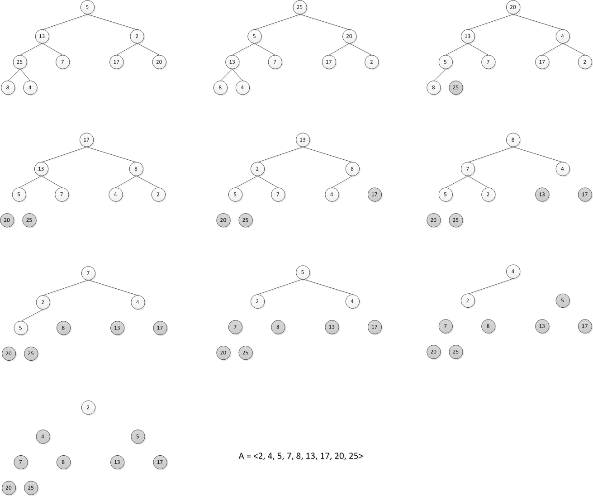

Summary
HEAPSORT(A)
BUILD-MAX-HEAP(A)
for i = A.length downto 2
exchange A[1] with A[i]
A.heap-size = A.heap-size - 1
MAX-HEAPIFY(A,1)
실행시간 : O(n lg n) ⇒ The call to BUILD-MAX-HEAP takes time O(n) and each of the n-1 calls to MAX-HEAPIFY takes time O(lg n)
Exercises
6.4-1
Using Figure 6.4 as a model, illustrate the operation of HEAPSORT on the array A = <5, 13, 2, 25, 7, 17, 20, 8, 4>.

6.4-2
Argue the correctness of HEAPSORT using the following loop invariant:
At the start of each iteration of the for loop of lines 2-5, the subarray A[1..i] is a max-heap containing the i smallest elements of A[1..n], and the subarray A[i+1..n] contains the n - i largest elements of A[1..n], sorted.
- 초기화 : A[i+1..n] 부분 배열은 존재하지 않는다. 따라서, 불변식은 유지된다.
유지 : A[1..i]에서 A[1]은 가장 큰 요소이다. 그리고 A[i+1..n]에 있는 요소들보다 작다. i번째 위치에 A[1]을 삽입할 때, A[i..n]은 정렬된 상태인 가장 큰 요소들을 가지고 있다. heap 크기를 감소시키고 MAX-HEAPIFY 를 호출하는 것은 A[1..i-1]을 max-heap을 만든다.
종료 : i = 1 이후에 함수는 종료된다. A[2..n]은 정렬되었으며, A[1]은 배열 요소중 가장 작은 요소이다.
6.4-3
What is the running time of HEAPSORT on an array A of length n that is already sorted in increasing order? What about decreasing order?
두 경우 전부 θ(n lg n) 실행시간을 가진다.
- 오름차순일 경우, 힙으로 변환하기 위한 실행 시간은 O(n) 이다. 그러나 MAX-HEAPIFY를 n-1번 호출 해야 한다. 각 비용은 lg k 이므로 실행 시간은 다음과 같다.$$\sum_{i=1}^{n-1}\lg{k} = \lg\Big((n-1)!\Big) = \Theta(n\lg{n})$$
- 내림차순일 경우, BUILD-MAX-HEAP은 상수 요인을 가진다. 그러나 HEAPSORT의 for문을 전부 돌아야 하므로 실행시간은 다음과 같다.
$$\Theta(n\lg n)$$
6.4-4
Show that the worst-case running time of HEAPSORT is Ω(n lg n).
- 6.4-3 문제의 첫 번째 경우와 같다.
6.4-5
Show that the worst-case running time of HEAPSORT is Ω(n lg n).